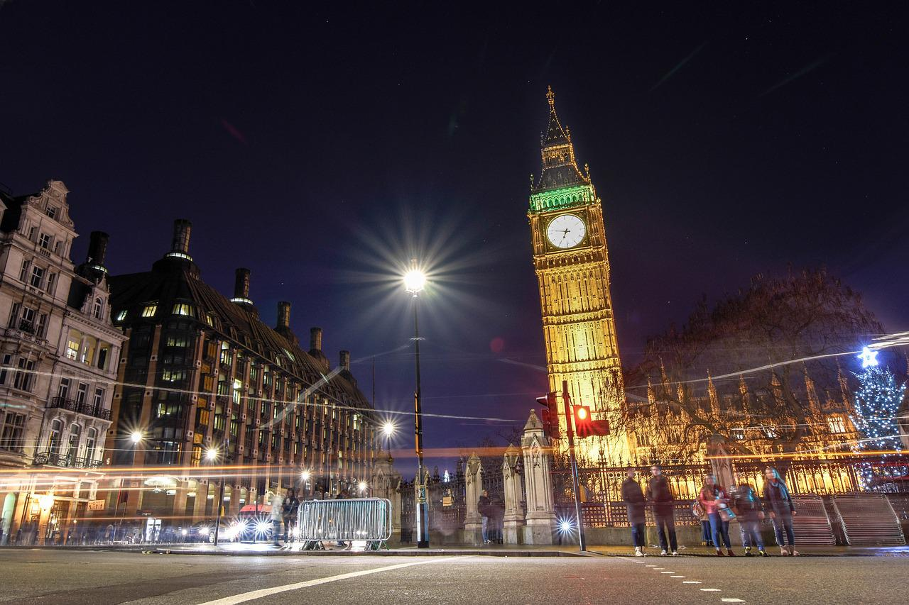

Sights in London
The Tower Bridge

Tower Bridge is a Grade I listed combined bascule and suspension bridge in London, built between 1886 and 1894, Which was designed by Horace Jones and engineered by John Wolfe Barry with the help of Henry Marc Brunel.
The bridge is 800 feet (ca. 244 m) in length and consists of two 213-foot (65 m) bridge towers connected at the upper level by two horizontal walkways, and a central pair of bascules that can open to allow shipping. Originally hydraulically powered, the operating mechanism was converted to an electro-hydraulic system in 1972. The bridge is part of the A100 London Inner Ring Road and thus the boundary of the London congestion charge zone, and remains an important traffic route with 40,000 crossings every day. The bridge deck is freely accessible to both vehicles and pedestrians, whereas the bridge's twin towers, high-level walkways and Victorian engine rooms form part of the Tower Bridge Exhibition.
Tower Bridge has become a recognizable London landmark. It is sometimes confused with London Bridge, about 0.5 miles (0.8 km) upstream, which has led to a popular urban legend about an American purchasing the wrong bridge. Several stunt pilots have flown underneath the bridge, including the pioneering Francis McClean.
The London Eye

The London Eye, or the Millennium Wheel, is a cantilevered observation wheel on the South Bank of the River Thames in London. It is Europe's tallest cantilevered observation wheel, and is the most popular paid tourist attraction in the United Kingdom, with over 3 million visitors annually. It has made many appearances in popular culture.
The structure is 135 metres (ca. 443 ft) tall and the wheel has a diameter of 120 metres (ca. 394 ft). Back then, when it was opened to the public in 2000 it was the world's tallest Big wheel.
The London Eye used to be the highest public panorama point in London until it was beaten by the 245-metre-high 804 ft observation deck on the 72nd floor of The Shard, which opened to the public on 1st February 2013.
Big Ben

Big Ben is the nickname for the Great Bell of the striking clock at the north end of the Palace of Westminster in London, England, and the name is frequently extended to refer also to the clock and the clock tower. The official name of the tower in which Big Ben is located was originally the Clock Tower, but it was renamed Elizabeth Tower in 2012 to mark the Diamond Jubilee of Elizabeth II.
Big Ben is the largest of the tower's five bells and weighs 13.5 long tons (13.7 tonnes; 15.1 short tons). It was the largest bell in the United Kingdom for 23 years. The origin of the bell's nickname is open to question; it may be named after Sir Benjamin Hall, who oversaw its installation, or heavyweight boxing champion Benjamin Caunt. Four quarter bells chime at 15, 30 and 45 minutes past the hour and just before Big Ben tolls on the hour. The clock uses its original Victorian mechanism, but an electric motor can be used as a backup.
The tower is a British cultural icon recognised all over the world. It is one of the most prominent symbols of the United Kingdom and parliamentary democracy, and it is often used in the establishing shot of films set in London. The clock tower has been part of a Grade I listed building since 1970 and a UNESCO World Heritage Site since 198